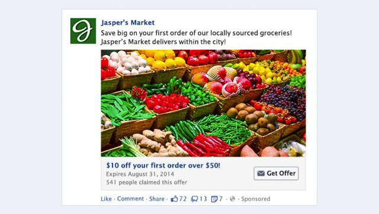

Hướng dẫn chạy quảng cáo Facebook A-Z + [tool tối ưu Ads]

Ty Nguyen
CEO ❤️ AhaChat. Love babies & chatbot.
Để bán được hàng trên Facebook thu được lợi nhuận thì bạn cần phải biết cách chạy quảng cáo Facebook Ads thật hiệu quả. Làm cách nào để tối ưu được các chiến dịch quảng cáo đạt hiệu quả cao? Tất cả những thắc mắc của bạn sẽ được giải đáp qua bài viết dưới đây, đừng bỏ lỡ nhé!
Facebook là một trong các trang mạng xã hội có số lượng người dùng nhiều nhất hiện nay trên thế giới và ở cả Việt Nam chúng ta. Mạng xã hội Facebook không chỉ là nơi giao lưu kết bạn, cập nhật các thông tin nóng hổi, các tin tức thời sự hot mà còn là nơi những người kinh doanh có thể bán hàng. Nhưng để bán được hàng trên Facebook thu được lợi nhuận thì bạn cần phải biết cách chạy quảng cáo Facebook Ads thật hiệu quả. Vậy quảng cáo facebook Ads là gì? Cách chạy quảng cáo Facebook như thế nào? Làm cách nào để tối ưu được các chiến dịch quảng cáo đạt hiệu quả cao? Tất cả những thắc mắc của bạn sẽ được giải đáp qua bài viết dưới đây, đừng bỏ lỡ nhé!
1. Quảng cáo Facebook Ads là gì?
Khái niệm Facebook Ads chắc chẳng còn xa lạ gì với những người đang kinh doanh online, kiếm tiền online thông qua Fanpage Facebook. Và để hiểu rõ hơn về khái niệm quảng cáo Facebook Ads là gì, trước hết bạn cần biết được “Ads” là viết tắt của từ gì. Ads là từ viết tắt của từ Advertising, từ này có nghĩa là quảng cáo. Vì vậy, bạn có thể hiểu Facebook Ads là một dịch vụ quảng cáo của Facebook.
Quảng cáo Facebook Ads là hình thức quảng cáo trả phí của Facebook để hiển thị hình ảnh, nội dung các chương trình ưu đãi, các sản phẩm khuyến mãi,... đến với người dùng tiềm năng sử dụng mạng xã hội Facebook
So với quảng cáo truyền thống thì quảng cáo Facebook Ads có những ưu điểm vượt trội hơn cả. Bởi quảng cáo Facebook Ads có thể tiếp cận chính xác với đối tượng khách hàng mục tiêu thông qua các tiêu chí như sở thích, hành vi, nhân khẩu học, vị trí địa lý,...
Ví dụ: bạn đang kinh doanh quần áo, đối tượng nhắm tới là những nữ giới tầm 18 - 35 tuổi có sở thích mua sắm. Với những tiêu chí này, Facebook có thể xác định được và khoanh vùng tệp đối tượng mà bạn muốn hướng tới. Nhờ vậy mà bạn giảm được chi phí quảng cáo, gia tăng tỷ lệ chuyển đổi khách hàng nhờ vào việc tiếp cận đúng với đối tượng mà bạn đang hướng tới.
2. Các loại Facebook Ads
Tuỳ vào mục đích, loại sản phẩm, dịch vụ sẽ tương ứng với những hình thức quảng cáo Facebook Ads khác nhau. Dưới đây là một số loại Facebook Ads đang phổ biến nhất hiện nay:
Tăng lượt truy cập vào trang web
Nếu bạn đang làm trong lĩnh vực liên quan đến website và muốn lượt truy cập vào trang web của bạn được tăng lên thì việc bạn nên chọn các hình thức quảng cáo điều hướng traffic vào website
Một số hình thức quảng cáo Facebook Ads phù hợp với việc tăng lượt truy cập web đó là:
- Ads link cột bên phải
Khi bạn dùng Facebook, nhìn vào phía bên phải giao diện của trang chủ thường sẽ thấy những quảng cáo Facebook như hình dưới đây
Hình thức quảng cáo này hiện rất phổ biến, bất cứ lúc nào bạn vào Facebook cũng có thể nhìn thấy các quảng cáo này xuất hiện. Đích đến của những quảng cáo này là đưa bạn đến trang web chính của nhà quảng cáo hay bất kì một địa chỉ nào mà nhà quảng cáo muốn khi bạn click vào quảng cáo đó.
Loại quảng cáo này thường bao gồm 1 hình ảnh có kích thước là 100 x 72 pixel kèm thêm một dòng tiêu đề in đậm khoảng 25 ký tự, phía dưới dòng tiêu đề là chèn link web và 90 ký tự mô tả ngắn ở dưới đó.
Ưu điểm:
Là loại hình quảng cáo giá rẻ
Tỷ lệ cạnh tranh thấp, thường hiện 2 quảng cáo cùng 1 lúc và sau khoảng ít phút sẽ thay đổi quảng cáo khác
Khi di chuyển chuột trang Facebook thì quảng cáo không bị trôi theo
Nhược điểm: khi bạn chạy quảng cáo với hình thức này, sẽ khó gây chú ý được với người dùng Facebook vì họ chỉ thường tập trung vào lướt newfeed là chủ yếu. Như vậy khó tiếp cận được với người dùng khi chọn lựa hình thức quảng cáo này.
Nếu bạn chọn loại hình quảng cáo này để chạy Facebook Ads thì nên sử dụng những hình ảnh thật bắt mắt để gây chú ý với người dùng.
- Ads link newfeed
Ads link newfeed nghĩa là nhà quảng cáo đăng trực tiếp link lên Fanpage của họ kèm hình ảnh hoặc video và nội dung bài viết. Sau đó điều hướng quảng cáo đến những mục tiêu mà họ muốn tiếp cận.
Dạng quảng cáo Ads link newfeed
Quảng cáo Ads link newfeed chắc chắn người dùng nào khi lướt Facebook cũng sẽ thấy bởi nó hiển thị trên newfeed rất to và rõ ràng. Chi phí để chạy loại hình quảng cáo này hơi cao nhưng hiệu quả mang lại khá rõ rệt. Nếu bạn thiết lập target quảng cáo tốt, tiếp cận đến đúng đối tượng, chắc chắn người dùng sẽ click vào nút hiển thị kèm như Đăng ký, Mua ngay, Xem thêm,... để hướng đến website.
Hơn nữa, nếu bạn tạo chiến dịch quảng cáo như này kèm theo hình thức like, share, comment,... Nếu có like nhiều, share nhiều, comment nhiều thì chắc chắn sẽ nhiều người nhìn thấy quảng cáo của bạn, dần dần trang web của bạn có độ tin cậy cao.
Tăng lượt like và tương tác cho Fanpage
Bạn đang có Fanpage nhưng lượt like và tương tác còn rất kém, bạn muốn xây dựng thành một fanpage có đầy đủ thông tin, có nhiều lượt like và tương tác để tạo độ tin cậy nhằm chăm sóc được lượng khách hàng cũ.
Với trường hợp này thì hình thức quảng cáo để tăng like và tương tác cho Fanpage là khá phù hợp. Khi chạy quảng cáo like page, nội dung được hiển thị bao gồm tên Fanpage, dòng mô tả nội dung, số lượt like hiện có của Fanpage kèm nút Thích Trang được hiển thị ở vị trí dễ nhìn.
Khi quảng cáo được tiếp cận đúng khách hàng mục tiêu, khi họ nhìn thấy, nếu họ quan tâm thì khả năng like page của bạn là rất cao.
MULTI - PRODUCT ADS
Thời gian gần đây, Facebook đã cập nhật loại quảng cáo Multi Product Ads cho phép các nhà quảng cáo có thể quảng cáo được tối đa 5 sản phẩm khác nhau trong một chiến dịch, dạng như hình dưới.
Với dạng quảng cáo đa sản phẩm, bạn có thể chạy quảng cáo nhiều sản phẩm, khách hàng mục tiêu của bạn có nhiều sự lựa chọn hơn.
Multi Product Ads cũng giống như loại hình quảng cáo post link newfeed nhưng multi product ads quảng cáo 5 sản phẩm cùng 1 lúc tương ứng với 5 đường link.
Ưu điểm: Tiếp cận được khách hàng 1 lúc nhiều sản phẩm, phù hợp với những người kinh doanh online hoặc có website thương mại điện tử.
Dạng quảng cáo bài viết
Quảng cáo bài viết là hình thức quảng cáo được nhiều nhà quảng cáo sử dụng nhất hiện nay. Loại hình quảng cáo này có ưu điểm là khi nội dung bài viết đăng tải tốt, sẽ có độ lan truyền cao.
Dạng quảng cáo bài viết thường post kèm ảnh hoặc video, nhờ vậy lượt like, share, comment khá tốt. Ảnh càng bắt mắt, càng thu hút thì độ lan truyền càng mạnh. Dưới đây là 1 ví dụ về dạng quảng cáo bài viết post ảnh.
(hình ảnh)
Page post Video
Page Post Video là hình thức chạy quảng cáo cho bài post chứa video. Vì vậy để quảng cáo thật sự thu hút được nhiều người quan tâm thì bạn phải đầu tư video thật sống động, có chất lượng và độ phân giải tốt.
Hơn nữa, xem video trên Facebook cũng đã phổ biến với người dùng Facebook hiện nay và tỉ lệ ngày càng cao. Vì vậy, đây cũng là một loại hình quảng cáo Facebook Ads mà bạn nên quan tâm
Ưu điểm: Nếu nội dung video hấp dẫn, chất lượng tốt, chắc chắn sẽ thu hút được nhiều lượt like, lượt comment và chia sẻ. Nhờ vậy mà Fanpage của bạn có độ uy tín cao, kéo theo dịch vụ và hàng hoá bạn bán cũng được nhiều người quan tâm.
Nhược điểm: muốn chạy quảng cáo video thu hút được nhiều người quan tâm, đòi hỏi video phải có chất lượng tốt. Tuy nhiên, để tạo ra 1 video có chất lượng tốt vừa tốn kém chi phí và tốn kém thời gian.
Tạo sự kiện hoặc khuyến mãi
Nếu bạn đang có ý định tổ chức một sự kiện, muốn nhiều người biết đến và tham gia sự kiện của bạn thì hình thức quảng cáo sự kiện mà bạn nên lựa chọn. Mục tiêu đối tượng mà bạn hướng đến là những người bạn nghĩ có thể quan tâm đến sự kiện của bạn
Với quảng cáo sự kiện, khi hiển thị sẽ bao gồm thông tin về sự kiện, tên fanpage, số người tham gia, dòng mô tả ngắn kèm nút bấm Tham gia để thu hút người dùng click vào.
Còn với quảng cáo khuyến mãi, ưu đãi phù hợp với những cửa hàng đang có những chương trình giảm giá và muốn chia sẻ rộng chương trình giảm giá này đến khách hàng của bạn.

3. Cần chuẩn bị những gì khi bắt đầu chạy quảng cáo trên Facebook
Đã có rất nhiều trường hợp chạy quảng cáo Facebook Ads thất bại hoặc gặp phải lỗi trong quá trình chạy là do thiếu sự chuẩn bị trước khi chạy. Tuy nhiên, không phải ai cũng biết được cần chuẩn chuẩn bị những gì trước khi chạy quảng cáo Facebook để ít gặp lỗi và mang lại hiệu quả cao. Nếu bạn đang có nhu cầu chạy quảng cáo Facebook Ads nhưng chưa biết bắt đầu từ đâu thì hãy tiếp tục đọc bài viết của chúng tôi nhé.
1. Tài khoản chạy quảng cáo trên Facebook
Việc đầu tiên bạn cần chuẩn bị cho việc chạy quảng cáo trên Facebook chính là tài khoản để chạy quảng cáo. Hiện có 2 loại tài khoản chạy quảng cáo đó là tài khoản cá nhân và tài khoản Business.
Với tài khoản dùng để chạy quảng cáo Facebook thì bạn nên ưu tiên chọn lựa những tài khoản có thời gian sử dụng càng lâu càng tốt. Bởi những tài khoản Facebook đã có thời gian sử dụng lâu dài thì sẽ có sự tin cậy đối với Facebook hơn là những tài khoản chỉ mới tạo 1 đến 2 ngày.
Nếu trường hợp bạn không có nick Facebook đã có thời gian sử dụng dài thì nên tạo độ tin cậy với Facebook bằng cách tài khoản đó phải được public đầy đủ thông tin, kết bạn với lượng bạn bè nhất định, luôn tương tác với bạn bè khi có bài đăng liên tục trong vòng 1 tháng. Như vậy phần nào sẽ tạo được niềm tin đối với Facebook.
Ngoài ra, bạn cũng nên chuẩn bị cho mình 2 tài khoản Facebook để chạy quảng cáo nhằm tránh trường hợp facebook khóa tài khoản do bị vi phạm chính sách Facebook khi chạy, làm gián đoạn quá trình chạy quảng cáo dẫn đến không hiệu quả.
2. Tạo một Fanpage để bắt đầu quảng cáo trên Facebook
Khi chạy quảng cáo trên Facebook, ngoài việc đã có tài khoản quảng cáo thì bạn cũng cần phải chuẩn bị Fanpage để đăng tải những nội dung, hình ảnh sản phẩm mà bạn muốn quảng bá. Với bán hàng online, chạy quảng cáo trên Facebook để tiếp cận khách hàng thì Fanpage được xem như một cửa hàng thu nhỏ. Vì vậy bạn nên chuẩn bị một Fanpage có đầy đủ thông tin, ảnh đại diện và ảnh bìa của fanpage thu hút được người nhìn, tạo nên độ uy tín cho Fanpage.
Bên cạnh đó, thường xuyên đăng tải các nội dung hình ảnh của sản phẩm, ưu tiên đăng tải những hình ảnh thật của sản phẩm, những thông tin có giá trị để tạo niềm tin cho khách hàng.
3. Thẻ Visa/Mastercard để thanh toán
Và để chạy được quảng cáo Facebook thì không thể thiếu ngân sách để chạy. Để chi ngân sách cho các chiến dịch quảng cáo, thẻ Visa/Mastercard sẽ giúp bạn điều đó. Vì vậy, trước khi chạy quảng cáo, bạn cũng cần phải chuẩn bị cho mình thẻ Visa/Mastercard.
Thẻ Visa/Mastercard của mỗi ngân hàng sẽ có những ưu nhược điểm khác nhau, bạn nên lựa chọn thẻ của những ngân hàng mà bạn thấy tiện lợi nhất trong quá trình chạy quảng cáo trên Facebook. Như vậy thì trong quá trình chạy quảng cáo nếu gặp các vấn đề về lỗi thẻ thì bạn dễ dàng biết cách xử lý, tránh được việc chiến dịch quảng cáo bị gián đoạn.
4. Cách target Facebook Ads
Khi chạy quảng cáo trên Facebook thì target là một kỹ thuật cực kỳ quan trọng, bởi việc xác định được target chuẩn sẽ giúp bạn tiếp cận được đối tượng khách hàng tiềm năng, phù hợp với sản phẩm của bạn nhất. Dưới đây là một số cách target Facebook Ads mang đến chiến lược quảng cáo đạt kết quả cao:
- Cách target Facebook Ads đạt hiệu quả theo tâm lý từng độ tuổi
Mỗi một sản phẩm bạn quảng cáo, mỗi một chiến lược kinh doanh khác nhau sẽ phù hợp với từng tệp khách hàng có hành vi khác nhau. Nếu bạn muốn target tiếp cận đúng khách hàng mục tiêu thì bạn cần phải hiểu tâm lý của những tệp khách hàng mà mình muốn hướng đến. Cụ thể, bạn có thể phân tích tâm lý khách hàng dựa vào độ tuổi:
- Target nhóm độ tuổi từ 18 - 22
Nhóm đối tượng khách hàng nằm trong độ tuổi từ 18 - 22 chủ yếu là sinh viên còn đi học chưa có thu nhập hoặc những sinh viên có đi làm thêm nhưng thu nhập không cao, chỉ có thể đủ để trang trải cuộc sống sinh viên. Bên cạnh những sinh viên đi học thì độ tuổi từ 18 - 22 cũng có số ít đã đi làm nhưng thu nhập của họ chưa cao và không ổn định.
Vì vậy khả năng tương tác của nhóm khách hàng của độ tuổi này có thể cao vì họ thường xuyên online, lướt mạng xã hội, tương tác trên Facebook nhưng khả năng mua hàng lại rất thấp bởi tài chính của nhóm tuổi này còn eo hẹp.
- Target nhóm độ tuổi từ 23 - 25
Nhóm tuổi từ 23 - 35 là những khách hàng vừa mới tốt nghiệp đại học, bắt đầu cuộc sống mới, không còn phụ thuộc vào sự chu cấp của bố mẹ. Họ bắt đầu rải hồ sơ đi xin việc, rồi đi làm. Với những người vừa mới ra trường thì mức thu nhập cũng không cao, trung bình chỉ khoảng 5 - 6 triệu 1 tháng. Đây cũng có thể coi là nhóm đối tượng này đã có thể tạo ra thu nhập nhưng mức thu nhập chưa cao và chưa ổn định.
Vậy với nhóm đối tượng khách hàng này, bạn có thể để ý là độ tuổi này thường kết hôn lập gia đình và làm mẹ. Vì thế, nhóm độ tuổi này thường quan tâm đến các mặt hàng mẹ và bé hoặc các mặt hàng thời trang, phụ kiện có mức giá tầm trung. Nếu bạn đang bán những sản phẩm này thì có thể tạo đối tượng khách hàng mục tiêu là nhóm đối tượng có độ tuổi từ 23 - 35.
- Target nhóm độ tuổi từ 26 - 30
Với nhóm đối tượng khách hàng có độ tuổi từ 26 - 30, hầu hết họ đã có công việc và mức thu nhập ổn định hơn, mức sống cũng khá hơn. Nhiều người ở độ tuổi này cũng đã có địa vị trong xã hội. Tâm lý mua hàng của những người ở độ tuổi này thường chịu chi, mua đồ đắt và có giá trị hơn. Đặc biệt, nữ giới ở độ tuổi này thường sinh nở nhiều, vì vậy bạn nên tập trung vào các mặt hàng mẹ và bé cho đối tượng này.
- Target nhóm độ tuổi từ 31 - 40
Nhóm người ở độ tuổi này hầu hết đã có thu nhập dư dả, mức sống cũng cao hơn, vì vậy các sản phẩm họ mua thường là những sản phẩm cao cấp, có giá trị, chất lượng chuẩn. Họ không cần quan tâm đến giá cả mà chỉ quan tâm đến chất lượng. Nếu bạn bán những mặt hàng cao cấp, có giá trị thì có thể tiếp cận đến tệp đối tượng này.
- Target nhóm độ tuổi từ 40 trở lên
Với độ tuổi từ 40 trở lên thì việc tương tác trên mạng xã hội Facebook là không nhiều nhưng điều này cũng không ảnh hưởng đến việc mua hàng trên Facebook của họ. Nhóm người ở độ tuổi này thường có cuộc sống dư dả, không vướng bận nhiều. Họ đã có những khoản tiết kiệm riêng, tài sản riêng.
- Cách target đối tượng Facebook dựa vào vị trí địa lý
Target đối tượng Facebook Ads dựa vào vị trí địa lý nghĩa là khi bạn lên chiến dịch quảng cáo, bạn có thể tự thiết lập vị trí mà bạn muốn chiến dịch đó hiển thị. Với cách target này, bạn có thể lựa chọn bất cứ vị trí nào mà bạn muốn hiển thị, có thể là phạm vi cả nước, một thành phố, một vùng hoặc trong một phạm vi bán kính nào đó mà bạn chọn. Từ đó, chiến dịch quảng cáo sẽ tiếp cận đến những người sống tại vị trí mà bạn chọn. Bạn nên chọn lựa những vị trí mà bạn có thể phục vụ khách hàng của họ.
- Cách target Facebook Ads dựa theo sở thích
Để có thể chạy target đối tượng Facebook Ads theo sở thích thì bạn cần phải thực sự hiểu tất tần tật mọi thứ về khách hàng của bạn. Bạn phải dành thời gian nghiên cứu xem sản phẩm bạn đang bán phù hợp với đối tượng khách hàng nào. Xét về các khía cạnh như họ bao nhiêu tuổi, là nam giới hay nữ giới, mức sống của họ thế nào, làm công việc gì, thu nhập cao hay thấp,...
5. Cách tạo quảng cáo Facebook căn bản đầu tiên (dành cho người mới step-by-step)
Với xu hướng công nghệ thời đại số phát triển vũ bão như hiện nay thì việc chạy quảng cáo Facebook đã không còn lạ lẫm với nhiều người nữa. Bạn chỉ cần có 1 tài khoản Facebook cùng với 1 chiếc thẻ Visa là có thể tự chạy quảng cáo Facebook cho thương hiệu của bản thân. Các bước tạo quảng cáo Facebook cũng khá đơn giản, bạn có thể thực hiện theo các bước sau:
Bước 1: Tạo chiến dịch quảng cáo
Cách đơn giản nhất để bạn tạo một chiến dịch quảng cáo Facebook Ads cho một bài post là bạn click vào Quảng cáo bài viết ở phía dưới bài post.
Hoặc bạn có thể truy cập vào đường dẫn https://www.facebook.com/business/ để tạo quảng cáo cho bài viết có sẵn trên Fanpage hoặc cũng có thể tự tạo một bài viết mới để chạy chiến dịch.
Sau khi truy cập vào đường dẫn, bạn bấm vào nút Tạo quảng cáo trên thanh menu để bắt đầu tạo Facebook Ads.
Tiếp theo đó, bạn sẽ được chuyển đến phần trình quản lý quảng cáo. Tại đây, bạn có thể quản lý quảng cáo trên Facebook của bạn.
Tuỳ vào mục đích chạy quảng cáo mà bạn lựa chọn mục tiêu tương ứng trong phần Chọn mục tiêu chiến dịch
Sau khi chọn lựa được mục tiêu, bạn kéo xuống dưới để Đặt tên cho chiến dịch rồi bấm vào nút Tiếp tục như hình dưới
Bước 2: Thiết lập tài khoản quảng cáo
Nếu đây là lần đầu tiên bạn chạy quảng cáo Facebook Ads, bạn cần phải tạo tài khoản quảng cáo trước khi thiết lập các thông số cho chiến dịch. Tài khoản quảng cáo phải có đầy đủ các thông tin như Quốc gia, Loại tiền, Múi giờ,...
Sau khi thiết lập xong tài khoản quảng cáo, bạn bấm chọn Tiếp tục
Bước 3: Thiết lập ngân sách quảng cáo
Tại đây, bạn cần phải thiết lập ngân sách cho chiến dịch quảng cáo cũng như đặt lịch thời gian chạy. Với phần ngân sách quảng cáo, bạn có thể lựa chọn trả theo Ngân sách hàng ngày hoặc Ngân sách trọn đời.
Với trường hợp chọn Ngân sách hàng ngày, facebook sẽ phân phối theo chiến dịch quảng cáo của bạn theo mức chi tiêu mà bạn đã đặt. Tuy nhiên không phải ngày nào Facebook cũng chi tiêu trọn bộ ngân sách mà bạn đặt, mà thay vào đó, Facebook sẽ cân đối giúp bạn làm sao trong thời gian chạy quảng cáo, trung bình mỗi ngày sẽ là mức ngân sách mà bạn đặt.
Còn với ngân sách trọn đời thì cũng giống như Ngân sách hàng ngày, chỉ có một điều khác đó là thay vì chiến dịch quảng cáo bạn đặt chi phí theo ngày thì bạn sẽ đặt chi phí trọn gói cho cả chiến dịch luôn.
Bước 4: Chọn đối tượng mục tiêu cho chiến dịch quảng cáo
Tiếp theo, bạn cần đặt tên cho nhóm Quảng cáo và chỉnh sửa các thông tin cho phù hợp với mục tiêu, đối tượng mà bạn muốn hướng đến trong chiến dịch của bạn.
Chiến dịch quảng cáo có hiệu quả hay không phụ thuộc rất lớn vào bước này. Bạn nên dựa vào kế hoạch, đối tượng mục tiêu mà bạn muốn hướng tới để thiết lập các thông số như Vị trí, tuổi, giới tính, ngôn ngữ,... sao cho phù hợp nhất.
Nếu bạn xác định được đối tượng càng cụ thể chi tiết thì chiến dịch của bạn sẽ càng hiệu quả hơn, phần ngân sách cũng rõ ràng hơn.
Dựa vào các thông tin đối tượng mà bạn chọn, Facebook sẽ đưa ra kết quả ước tính trước giúp bạn. Bạn có thể xem kết quả đó ở bên tay phải của trang thông qua các biểu đồ.
Bước 5: Lựa chọn vị trí quảng cáo mà chiến dịch muốn tiếp cận
Tiếp đó, bạn lựa chọn vị trí quảng cáo mà chiến dịch muốn tiếp cận tại mục Vị trí quảng cáo. Ở đây, bạn có thể lựa chọn Vị trí quảng cáo tự động hoặc Chỉnh sửa vị trí quảng cáo
Nếu bạn tích chọn vào vị trí tự động, Facebook sẽ tự động thiết lập những vị trí phù hợp và tối ưu nhất mà chiến dịch của bạn có thể hiển thị.
Còn nếu bạn tích chọn vào vị trí quảng cáo thủ công nghĩa là bạn có thể tự thiết lập được vị trí mà chiến dịch quảng cáo của bạn sẽ xuất hiện trên loại thiết bị nền tảng nào. Có thể lựa chọn xuất hiện trên tất cả thiết bị hoặc chỉ xuất hiện trên di động hoặc máy tính, có thể xuất hiện trên nhiều nền tảng hoặc chỉ riêng Facebook, Instagram hoặc Messenger.
Bạn có thể xem demo vị trí quảng cáo của mọi nền tảng ngay bên cạnh phần thiết lập để dễ hình dung được vị trí quảng cáo mà chiến dịch mình chạy sẽ xuất hiện như thế nào. Nếu trường hợp nào bạn thấy không cần thiết việc quảng cáo hiển thị ở đó thì có thể bỏ tích.
Sau khi đã thiết lập được ngân sách, thời gian chạy, đối tượng hướng đến và vị trí quảng cáo, bạn bấm chọn Tiếp tục ở góc cuối bên phải màn hình trang.
Bước 6: Lựa chọn bài post để quảng cáo trên Facebook
Cuối cùng, bạn lựa chọn fanpage và bài post muốn chạy quảng cáo. Để chọn được Fanpage muốn chạy quảng cáo, bạn bấm vào menu Trang Facebook để chọn. Khi đã chọn được Fanpage, bạn tìm chọn bài viết muốn chạy quảng cáo. Khi lựa chọn được bài viết bạn có thể xem trước vị trí quảng cáo sẽ xuất hiện để biết được khi chạy bài quảng cáo sẽ hiển thị với người dung như thế nào.
Sau khi hoàn tất các bước trên, bạn xem lại một lần trước khi chạy, rồi bấm Đăng để đăng quảng cáo.
Lúc này giao diện cửa sổ Thông tin thanh toán xuất hiện, bạn chọn phương thức thanh toán và các thông số về đơn vị tiền tệ,... rồi bấm vào nút Tiếp để chuyển sang giao diện điền thông số thẻ thanh toán.
Sau khi hoàn thành các bước, việc của bạn là chờ Facebook xét duyệt quảng cáo. Thời gian chờ xét duyệt thường diễn ra trong vòng 24h. Sau khi có thông báo xác nhận thành công từ Facebook, chiến dịch quảng cáo sẽ tự động chạy ngay.
6. Những lưu ý khi chạy quảng cáo Facebook Ads
Khi chạy quảng cáo Facebook Ads, không phải chiến dịch nào bạn cũng có thể chạy suôn sẻ, sẽ có lúc bạn gặp phải những trở ngại, đang chạy Ads thì tài khoản bị chết, thậm chí cứ lên chiến dịch chạy quảng cáo là tài khoản chết, dẫn đến chiến dịch không thành công. Vậy để tránh bị khoá tài khoản hay vi phạm chính sách Facebook khi chạy quảng cáo thì bạn cần nắm rõ một số lưu ý sau:
- Đăng tải hình ảnh quảng cáo Facebook không được chứa quá nhiều chữ
Theo chính sách của Facebook đã quy định, khi đăng tải các hình ảnh hay video quảng cáo thì phần text không được chiếm quá 20%. Nếu bạn đăng tải những hình ảnh có quá nhiều nội dung chữ hiển thị thì Facebook có thể sẽ xem đó là spam, dẫn đến việc quảng cáo của bạn bị hạn chế hoặc không hiển thị tiếp cận với lượng khách hàng tiềm năng của bạn. Từ đó ảnh hưởng đến hiệu quả của chiến dịch quảng cáo.
Tuy nhiên, nói là vậy nhưng trên thực tế, Facebook không thể đếm ký tự trên hình ảnh mà bạn đăng tải, mà chỉ dựa vào phần diện tích chữ chiếm trên ảnh. Vì vậy bạn để text rải rác khắp nơi trên hình ảnh, chữ có font size to thì càng nguy hiểm, dễ bị facebook quét. Thay vì đó thì bạn nên viết text ở 1 cụm cũng như sử dụng font chữ vừa phải để chiến dịch chạy hiệu quả hơn.
- Không quảng cáo các sản phẩm mà Facebook cấm và hạn chế
Với những sản phẩm đã bị Facebook cấm và hạn chế, bạn không nên chạy quảng cáo cho những sản phẩm này. Bởi sản phẩm đã bị facebook cấm và hạn chế thì khi chạy quảng cáo sẽ không được duyệt, và chiến lược kinh doanh của bạn cũng không thành công.
Một số sản phẩm đang bị Facebook cấm và hạn chế đó là:
Các loại thuốc trái phép, thuốc kích thích, thuốc lá hoặc các loại liên quan đến thuốc lá
Các loại thực phẩm chức năng hay các thực phẩm bổ sung chất dinh dưỡng nhưng Facebook lại đánh giá không an toàn với sức khoẻ theo tiêu chí của họ.
Các loại pháo nổ, vũ khí đạn dược,...
Các sản phẩm liên quan đến dịch vụ người lớn, 18+ (ngoại trừ các sản phẩm liên quan đến kế hoạch hoá gia đình)
- Lưu ý về các nội dung bị Facebook cấm chạy quảng cáo
Nếu bạn chạy quảng cáo các nội dung bị facebook cấm thì có thể dẫn đến tình trạng tài khoản quảng cáo hoặc fanpage của bạn bị khoá. Những nội dung bị Facebook cấm khi chạy quảng cáo đó là:
Các nội dung vi phạm bản quyền
Quảng cáo cản sản phẩm nhái các thương hiệu đình đám như Nike, Adidas,.... sẽ không được duyệt. Nếu bạn cố tình tìm cách lách luật Facebook để chạy quảng cáo những sản phẩm này thì khi bị Facebook phát hiện thì Fanpage và tài khoản quảng cáo của bạn sẽ bị Facebook khóa.
Nếu chạy quảng cáo kèm video có nhạc bản quyền thì facebook sẽ không phê duyệt cho bạn Nếu được phê duyệt thì video cũng bị tắt tiếng. Vì vậy nên chèn những bản nhạc miễn phí, không vi phạm bản quyền.
Chạy quảng cáo những nội dung nhạy cảm như có các hình ảnh gợi cảm, các tư thế khiêu dâm, hình ảnh khoả thân,...
Tips: Nếu bạn muốn chạy quảng cáo bán sản phẩm đồ lót thì chỉ nên chụp hình sản phẩm và khi chạy chỉ đăng tải những hình ảnh sản phẩm, không đăng những hình ảnh có mẫu mặc để tránh được việc Facebook hạn chế quảng cáo.
- Các nội dung gây sốc, bạo lực, các tin giật gân,....
- Lưu ý đến các từ ngữ vi phạm chính sách quảng cáo không được Facebook phê duyệt
Facebook đã chỉ ra một số từ ngữ bị cấm liên quan đến lĩnh vực y tế, bệnh viện, về sức khỏe, tinh thần, cảm xúc, các từ thuộc lĩnh vực tài chính tiền tệ, các từ liên quan đến thành phần hoá học, hoặc phân biệt chủng tộc, tôn giáo, giới tính.
Một số từ bị cấm trong lĩnh vực tài chính tiền tệ như: vay, vay vốn, vay tiền, vay tiền tệ, vay tín chấp, vay tín dụng, vay lãi suất, tài chính, lãi suất, thuế, giải ngân,...
Những từ mang ý nghĩa tiêu cực: tự tử, tử nạn, tử vong, chết chóc, đau đớn,...
Các từ liên quan đến các bộ phận trên cơ thể: gan, tim, phổi, xương khớp, viêm xoang,....
Các từ liên quan đến người bệnh như: bệnh nhân, bệnh nhi, bệnh viện, phòng khám bệnh,...
Các từ liên quan đến phân biệt chủng tộc, tôn giáo, giới tính: ông này, bà nọ, nam giới, nữ giới, người da đen, người da trắng, người da màu,...
- Content quảng cáo không được chứa ngôn ngữ mang tính chắc chắn
Rất nhiều thương hiệu khi viết bài chạy quảng cáo cho sản phẩm của mình, thường có thói quen sử dụng những nội dung mang tính cam kết chắc chắn để nhằm mục đích tạo độ uy tín và sự tin tưởng về sản phẩm của mình.
Một số từ ngữ thể hiện nội dung mang tính chắc chắn như: cam kết khỏi bệnh, sạch mụn 100%,... Nếu trong bài content của bạn chứa những từ ngữ này thường Facebook sẽ không duyệt chiến dịch quảng cáo cho bạn bởi Facebook cho rằng những điều này chưa được kiểm định nên không có gì là tuyệt đối.
Không seeding bài quảng cáo trước khi chạy
Tránh để trùng lặp đối tượng gây lãng phí ngân sách quảng cáo
Khi lên một chiến dịch quảng cáo, bạn không nên xây dựng target đối tượng trùng nhau cho 1 bài quảng cáo. Bởi chạy các đối tượng trùng nhau trên 1 chiến dịch quảng cáo là bạn đang tự đi cạnh tranh với chính chiến dịch của mình, điều này chỉ khiến bạn lãng phí tiền còn hiệu quả mang lại không cao.
7. Nâng cao: Hướng dẫn kết hợp chatbot vào Facebook Ads để tối ưu tối đa hiệu quả
Nếu bạn chỉ chạy quảng cáo Facebook Ads thông thường thì đôi lúc hiệu quả mang lại không được như ý muốn. Bởi việc chạy quảng cáo đơn thuần khiến doanh nghiệp bỏ quên việc chăm sóc lại các khách hàng cũ. Hơn nữa, Facebook ngày càng thắt chặt các chính sách, hạn chế người dùng tiếp cận với Fanpage, điều này khiến cho chiến dịch quảng cáo của bạn hạn chế việc tìm kiếm được khách hàng tiềm năng. Ngoài ra, người dùng hiện nay khi mua hàng cũng đã có sự chọn lọc, các quảng cáo trên Facebook hiện nay đang chạy tràn lan, số lượng sản phẩm thì nhiều nhưng chất lượng lại không tốt, khiến người dùng ngày càng mất niềm tin vào những quảng cáo trên Facebook.
Chính vì vậy, thay vì chỉ chăm chăm chạy quảng cáo Facebook tiếp cận các đối tượng khách hàng mới để ra đơn, thì bạn cũng nên kết hợp với việc chăm sóc, nuôi dưỡng các khách hàng cũ. Để làm được điều này thì chạy quảng cáo Facebook không thể đáp ứng được, mà cần phải kết hợp với một công cụ hỗ trợ cho việc chăm sóc lại khách hàng cũ. Và chatbot chính là một công cụ khi kết hợp với Facebook Ads sẽ thực hiện được việc này.
Chatbot có thể làm được những việc gì cho FB ads? (ưu điểm của chatbot)
Việc kết hợp chatbot với Facebook Ads không phải là mô hình mới mẻ chưa một ai áp dụng. Tuy nhiên, mô hình này chưa phổ biến cũng như không phải ai cũng hiểu rõ được lợi ích mà chatbot có thể mang lại khi kết hợp cùng Facebook Ads.
Dưới đây là một số ưu điểm mà chatbot có thể làm khi kết hợp với Facebook Ads:
- Hỗ trợ chăm sóc được khách hàng cũ song song với việc tiếp cận khách hàng mới
So với việc chỉ
Không chỉ tiếp cận khách hàng mới mà việc chăm sóc lại khách hàng cũ cũng quan trọng không kém. Hầu như, khi chạy quảng cáo Facebook chỉ tiếp cận được lượng khách hàng mới nhưng các khách hàng cũ lại bị bỏ bê. Tuy nhiên, bạn cũng có thể tiếp cận được khách hàng mới thông qua mạng lưới của khách hàng cũ.
Vì vậy, chạy quảng cáo Facebook kết hợp với chatbot sẽ giúp bạn vừa tiếp cận được khách hàng mới và vẫn có thể chăm sóc được cả khách hàng cũ bằng cách tạo ra các kịch bản đã được soạn sẵn tự động được gửi đến khách hàng cũ thông tin về sản phẩm, các chương trình khuyến mãi,...
- Tiếp cận và thu hút được sự chú ý của khách hàng hiệu quả hơn
Khi chạy quảng cáo Facebook sẽ tiếp cận được các khách hàng mới. Và để nhận được sự chú ý từ khách hàng về doanh nghiệp của bạn thì chatbot sẽ hỗ trợ điều đó. Nếu khách hàng đã tương tác với fanpage của bạn, chatbot có thể gửi được tin nhắn hàng loạt thông qua tính năng broadcast để gửi các ưu đãi, thông tin sản phẩm đến đúng với đối tượng khách hàng. Điều này sẽ giúp bạn tiết kiệm được một khoản chi phí khi không cần chạy quảng cáo tiếp cận lại những đối tượng này.
- Giúp giữ chân khách hàng
Chatbot được xem như là một trợ lý ảo trong công việc kinh doanh online của bạn và hoạt động 24/7. Bất cứ lúc nào khách hàng inbox đến page của bạn, chatbot đều phản hồi ngay lập tức, không để khách hàng phải chờ đợi lâu, giúp bạn gắn kết với khách hàng được tốt hơn.
Ngoài ra, nếu bạn chạy quảng cáo trên facebook với những kiểu post chấm comment để nhận báo giá, hay thông tin chi tiết sản phẩm. Và lúc này chatbot sử dụng để rep lại bình luận của khách hàng, càng có nhiều bình luận tương tác, giá chạy Facebook ads lại càng rẻ. Hoặc chatbot cũng có thể dùng tính năng auto inbox để trả lời bình luận thông báo qua inbox.
Chính vì thế, doanh nghiệp của bạn ngày càng có thiện cảm với khách hàng. Thay vì khách hàng phải chờ đợi nhân viên rep lại quá lâu, và tìm đến các đối thủ để mua hàng thì chatbot giúp khách hàng có thiện cảm và giữ được chân khách hàng.
Hướng dẫn cách sử dụng
Hiện nay, có khá nhiều công cụ chatbot có thể kết hợp với quảng cáo Facebook Ads, và điển hình nhất phải kể đến là AhaChat, Manychat, Chatfuel.
Với Manychat và Chatfuel, đây là 2 công cụ chatbot được phát triển bởi đội ngũ quốc tế. Bạn có thể tìm hiểu thêm thông tin về cách kết hợp với Facebook Ads bằng cách truy cập vào trang chủ của từng công cụ.
Tuy nhiên, để mà nói công cụ chatbot phù hợp với thị trường kinh doanh online Việt Nam, thì phải kể đến AhaChat. AhaChat là công cụ chatbot được phát triển bởi người Việt, có đầy đủ mọi tính năng, giao diện đơn giản, dễ dàng sử dụng.
Với AhaChat, bạn có 3 cách để kết nối chatbot với quảng cáo Facebook. Dưới đây là hướng dẫn kết nối chatbot với quảng cáo Facebook trên AhaChat theo các cách khác nhau.
Cách 1: Dùng tính năng Facebook Ads Json
Khi khách hàng bấm vào nút gửi tin nhắn trên bài post bạn đang chạy quảng cáo thì tin nhắn sẽ lập tức được gửi đến mess khách hàng theo kịch bản đã được thiết lập sẵn thông qua tính năng Facebook Ads Json với nhiều dạng tùy biến khác nhau như: văn bản, hình ảnh, bộ sưu tập, nút bấm, các chương trình minigame, vòng quay hay các chiến dịch viral,...
Đây chính là lợi thế của chatbot kết hợp với quảng cáo Facebook Ads so với quảng cáo mặc định của Facebook. Khi người dùng click vào nút Gửi tin nhắn trên bài post quảng cáo thì chỉ nhận lại được những mẫu tin nhắn văn bản đơn giản và sau đó chờ nhân viên vào phản hồi.
Để hiểu rõ hơn về cách dùng tính năng Facebook Ads Json của chatbot AhaChat, bạn bấm vào tại đây
Cách 2: Tính năng Facebook Ads cơ bản
Với Facebook Ads cơ bản, bạn cũng có thể kết nối ngay với khách hàng thông qua kịch bản chatbot được thiết lập sẵn sau khi người dùng click vào nút Gửi tin nhắn
Tham khảo về cách dùng tính năng Facebook Ads cơ bản tại đây
Cách 3: Tính năng Facebook Ads trên AhaChat
Facebook Ads là cách tiếp cận lại khách hàng cũ của Fanpage dưới dạng tin nhắn được tài trợ thông qua kênh Facebook Messenger. Bạn có thể gửi các thông tin về sản phẩm, các chương trình ưu đãi, khuyến mãi cho tệp khách hàng này nhưng không tốn quá nhiều chi Tham khảo cách dùng tính năng Facebook Ads trên chatbot AhaChat tại đây
8. Mẹo quảng cáo Facebook Ads hiệu quả
Nắm được một số mẹo chạy quảng cáo Facebook Ads sẽ giúp chiến dịch quảng cáo của bạn hiệu quả hơn
Việc chạy quảng cáo Facebook Ads cũng có một số mẹo để giúp các nhà quảng cáo tiết kiệm được chi phí và hiệu quả mang lại khá cao. Tuy nhiên, không phải ai cũng biết đến những mẹo đó, đặc biệt là những người mới chạy quảng cáo những lần đầu. Dưới đây là một số mẹo quảng cáo Facebook Ads hiệu quả:
- Tối ưu hoá hình ảnh quảng cáo
Để giúp chiến dịch quảng cáo của bạn thu hút được nhiều người quan tâm thì không thể thiếu việc đính kèm thêm hình ảnh. Tuy nhiên, để hình ảnh tiếp cận được tốt nhất đến người dùng thì cần phải tối ưu hoá hình ảnh sao cho phù hợp khi hiển thị.
Facebook cũng đã có quy định về kích thước của các loại hình ảnh khác nhau, bạn nên sử dụng đến phần mềm cắt ảnh để cắt chính xác kích thước của từng loại ảnh.
- Quảng cáo bài viết
Nếu với những bạn mới chạy quảng cáo lần đầu, đừng nên chọn loại hình quảng cáo like fanpage. Bởi nếu chưa thực sự hiểu về quảng cáo Facebook Ads thì khi chạy loại quảng cáo này sẽ không thu được kết quả tốt nhưng chi phí bỏ ra cũng không hề rẻ
Với những bạn mới chạy quảng cáo thì chỉ nên chạy loại hình quảng cáo bài viết. Bạn hãy đầu tư viết content thật tốt, sau đó quảng cáo cho post đó, và đừng quên post kèm hình ảnh đã tối ưu hóa để mang lại kết quả tốt nhất.
- Ưu tiên bài viết có nhiều tương tác
Nếu bạn muốn chạy quảng cáo với những bài viết đã có sẵn trên Fanpage, bạn nên chọn những post đã có độ tương tác cao. Bởi khi chạy một bài post có độ tương tác cao cũng sẽ hiệu quả hơn và chi phí bỏ ra cũng rẻ hơn so với chạy bài viết mới
- Chia nhỏ chiến dịch quảng cáo
Thay vì bạn đổ tất cả ngân sách vào một chiến dịch quảng cáo, chỉ thu hút được một ít lượng tiếp cận của chiến dịch đó, thì bạn nên chia nhỏ chiến dịch ra. Cũng từng đấy ngân sách nhưng bạn có thể phân bổ cho những chiến dịch nhỏ, như vậy lượt tiếp cận sẽ được nhiều hơn. Chia nhỏ ngân sách quảng cáo, khi nào hết lại chạy tiếp, một mẹo cực kỳ quan trọng mà bạn nên nhớ.
- Chạy quảng cáo đúng giờ vàng
Theo kinh nghiệm từ các chuyên gia chạy quảng cáo cho thấy, thời gian chạy quảng cáo tốt nhất là từ 8h30 sáng đến 19h. Bởi khung giờ này khách hàng có thói quét lướt mạng xã hội nhiều và việc quyết định mua hàng cũng cao hơn.
Còn thời gian sau 19h, khách hàng không có thói quen mua hàng mà thay vào đó là các hoạt động giải trí nên chạy quảng cáo vào khung giờ này kết quả mang lại thường không cao.
- Sử dụng phần mềm để quản lý lượng comment, inbox
Hiện nay, việc chạy quảng cáo Facebook Ads ra được đơn không phải là điều dễ dàng. Nhiều khi bạn phải tốn rất nhiều ngân sách mới ra được đơn hàng. Tuy nhiên, nếu không cẩn thận thì có thể bị đối thủ cạnh tranh cướp mất đơn. Chính vì vậy để tránh được tình trạng này, bạn nên kết hợp với những phần mềm giúp bạn ẩn được bình luận khách hàng, tự động rep comment của khách và hướng khách vào inbox để hỗ trợ.
Nếu bạn chưa biết đến phần mềm nào thì có thể tham khảo công cụ chatbot AhaChat. Với AhaChat, bạn có thể ẩn được bình luận của khách comment, có thể tự động inbox cho khách hàng khi khách để lại comment ở bài post. Điều này sẽ khiến đối thủ của bạn không có cơ hội để cướp đơn :)